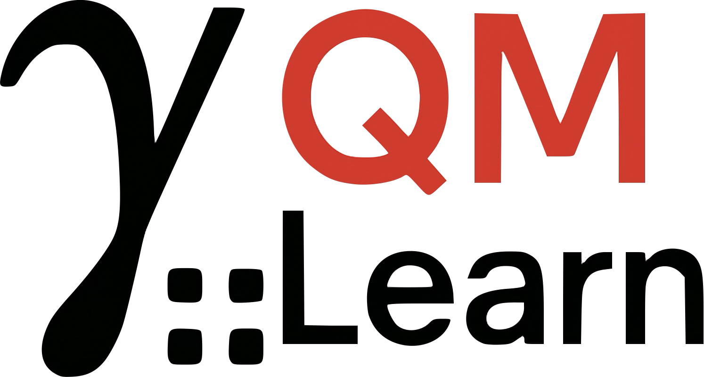

QMLearn 
Contacts
Installation
Tutorials
Video Tutorials
Jupyter-Notebook Tutorials
Creating a database.
Creating a QMModel: Fitting the Model and Predicting.
Using a QMModel: Performing Geometry Optimization.
API QMLearn
QMLearn
»
Tutorials
Index
Source
Previous
Next
Tutorials
Video Tutorials
0. QMLearn Installation
1. Intro to QMLearn
2. Creating a Database
3. Creating a QMModel: Fitting the Model and Predicting
4. Using a QMModel: Performing Geometry Optimization
Jupyter-Notebook Tutorials
Creating a database
.
Creating a QMModel: Fitting the Model and Predicting
.
Using a QMModel: Performing Geometry Optimization
.